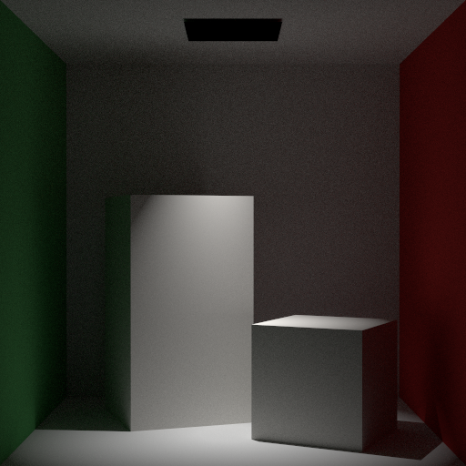
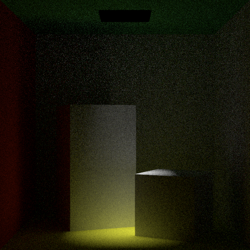
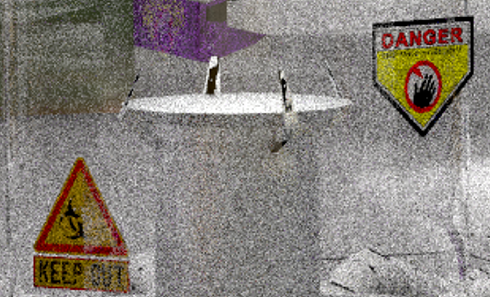
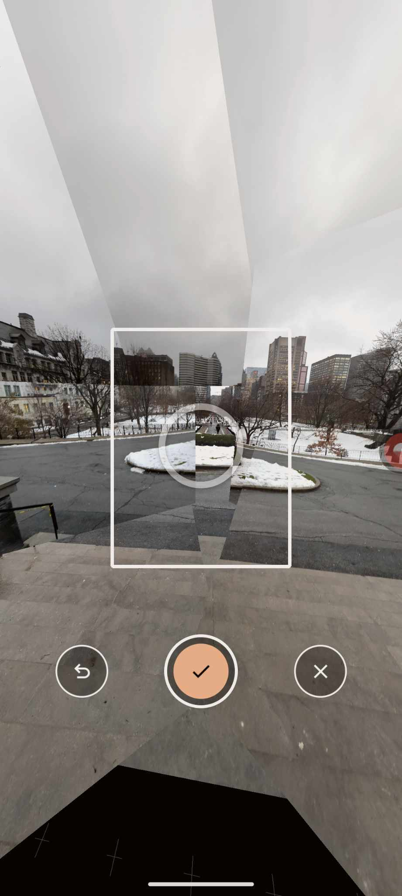
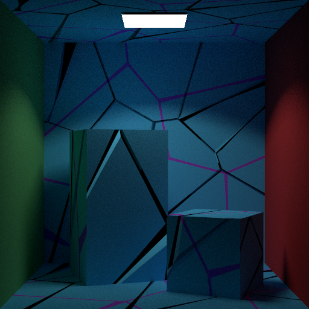
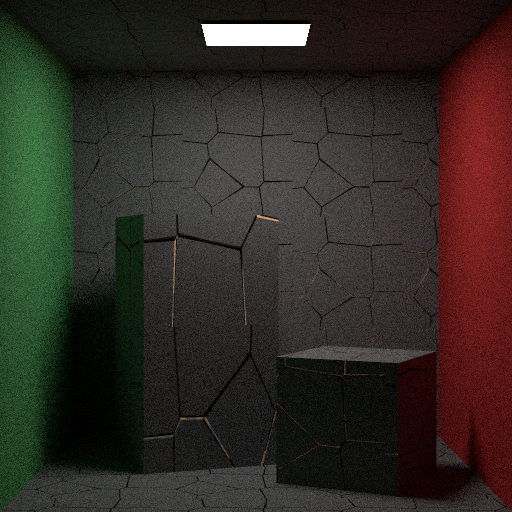

# Compétition de rendu
**Nom de l'équipe**: Genesis
**Membres de l'équipe**:
* Antoine Boucher
* Vincent Ducros
## Inspiration
|  |  |
|:----------------------------------------------------------:|:----------------------------------------------------------:|
| *DALL-E Generated Image* | *Concept de Cerveau IA pour Glitch (Source: [Pixabay](https://www.pixabay.com))* |
|  |  |
| *Westworld Inspiration 1 (Source: Westworld, 2016)* | *Westworld Inspiration 2 (Source: Westworld, 2016)* |
Motivation: Le thème “Les grandes avancées technologiques" nous a fait penser à l'intelligence artificielle. Nous voudrions faire le rendu d'un centre de données qui contient une intelligence artificielle de pointe.
Inspirés par le monde gouverné par l'IA de Westworld, nous visons à rendre une scène 3D qui imite un système IA complexe.
La scène comportera une sphère avec plusieurs câbles qui y entrent, représentant un "noyau" IA à la manière de Westworld.
## Description de la scène
Notre scène représente un centre de données futuriste, avec une sphère centrale qui représente une intelligence artificielle.
La sphère est entourée de câbles qui représentent les connexions de l'IA avec le monde extérieur.
Il y a également des serveurs en rack avec des LED et des équipements informatiques.
Pour les éclairer, en plus de l'IA, nous avons utilisé des spots lumineux.
Un verre sert à faire la séparation entre la salle et le monde extérieur, mais aussi de refléter la lumière de la sphère.
## Rendu final
9 h 20 de rendu sur un Ryzen 7 7840HS :
- path_mis
- max_depth 16 w/ Russian Roulette
- 4096 spp
- 2560x1440 pixels

Rendu présenté la semaine dernière :
~3h de rendu sur la configuration suivante
- Nvidia GTX 1080
- Ryzen 7 3700X
- path_mis
- max_depth 16 w/ Russian Roulette
- 1024 sample par pixel.

### Variantes de l'image
| Durée de Rendu | Samples par Pixel | Max Depth | Technique de Rendu | Filtre | Image |
|----------------|-------------------|-----------|--------------------|--------|-------|
| ~1:20h | 1024 | 16 | path_mis | Aucun |  |
| ~3h | 1024 | 16 | path_mis | Aucun |  |
| ~1:30h | 1024 | 16 | path_mis | Aucun |  |
| ~3h | 1024 | 16 | path_mis | Gini |  |
## Répartition du travail
### Antoine Boucher
- Profondeur de Champ Simple
- Source de Lumière Ponctuelle
- la Génération de Textures Voronoi
- Bump Map
- Optimisation GPU des textures images
- Post Processing
- (Instanciation)
### Vincent Ducros
- Cartographie d'Environnement avec échantillonnage par importance
- Micro-facettes
- Conducteur rugueux isotopique / anisotropique
- Verre fin
- Échantillonnage des sphères par angle solide
## Résumée des fonctionnalités mises en œuvres
### Source de Lumière Ponctuelle ( SpotLight )
Le Spotlight est une source lumineuse spéciale qui émet de la lumière sous forme de cône. Cette caractéristique unique permet de créer des effets de lumière concentrés, similaires à ceux d'un projecteur.
Pour augmenter la flexibilité, nous avons inclus la possibilité d'ajouter un offset à la source de lumière, ce qui permet de déplacer le cône de lumière. De plus, il est possible d'afficher une texture sur la source de lumière pour ajouter encore plus de détails et de réalisme.
| Spotlight | Spotlight Offset | Texture Light | Directionnel |
|:---------:|:----------------:|:-------------:|:-------------:|
|  |  |  |  |
Calcul de l'Atténuation de la Lumière
Pour calculer l'atténuation de la lumière, nous avons utilisé une formule de falloff basée sur l'angle entre le vecteur de direction sortant et la direction du projecteur.
```
Si cosTheta est inférieur à cosTotalWidth
retourner 0;
Si cosTheta est supérieur à cosFalloffStart
retourner 1;
delta = (cosTheta - cosTotalWidth) / (cosFalloffStart - cosTotalWidth);
Retourner delta^4
```
Pour créer le spotlight, nous avons utilisé la formule de falloff pour calculer l'atténuation de la lumière.
Pour la fonction *emissive*, nous avons normalisé le vecteur de direction sortant.
Il faut calculer cosTheta comme le produit scalaire du vecteur de direction normalisé et de la direction du projecteur.
Il est également nécessaire de calculer la valeur de l'atténuation et ajouter tout décalage nécessaire.
Enfin, il faut calculer la valeur finale d'émission de lumière.
Pour finalement retourner `2 * M_PI * radiance * atténuation`


La comparaison entre Mitsuba et notre Spotlight.
Ils sont très similaires, mais Mitsuba a un peu plus de bruit dans les ombres.
La forme du cône est aussi un peu différente.
### Profondeur de Champ
L'objectif était de vérifier que notre caméra pouvait non seulement capturer une image claire à une distance focale spécifiée, mais aussi produire un flou artistique (bokeh) approprié pour les objets en dehors de cette zone de netteté.
Le point focal est calculé en ajoutant la direction du rayon multipliée par la distance focale à l'origine du rayon.
L'ouverture de la caméra est modélisée pour créer l'effet de flou (dans la classe Camera).
Les coordonnées du point sur l'objectif sont calculées et utilisées pour ajuster l'origine et la direction du rayon, en tenant compte de l'effet de profondeur de champ.

La profondeur de champ permettant aux scènes de paraître plus naturelles et réalistes.
### Alpha Mask
Pour notre scène finale, nous avons implémenté des textures disposant d'une composante transparente. Cela nous permet d'insérer dans la scène des stickers collés sur la vitre protégeant le noyau de l'IA.
Notre approche s'inspire de celle présentée dans le rapport de Gingras et Lebel (https://profs.etsmtl.ca/agruson/competition/2022/william_vincent/rapport.pdf).



#### Implémentation basique
Premièrement, on cherche juste à remplacer l'arrière-plan solide par une texture. Pour cela, on va ajouter dans la scène une méthode *getBackground*, qui prend un rayon ne touchant pas la scène, le transforme d'abord en coordonnées sphériques puis en coordonnées uv pour aller évaluer correctement la texture.
Ici, la texture n'apporte aucune contribution à l'éclairage du reste de la scène.
Pour vérifier le bon fonctionnement, on compare une scène vide avec juste une skybox au même rendu dans Blender.
#### Implémentation uniforme
Cette fois-ci, on va plus loin en permettant à la carte d'environnement d'impacter le rendu des autres objets présents dans la scène.
La carte d'environnement devient ainsi une classe à part, et hérite de Shape. Elle ressemble quasiment trait pour trait à l'implémentation de la sphère et définit un *sampler_direct* et *pdf_direct* utilisé pour le path tracer MIS.
On définit également un matériau émissif qui possède une méthode *evaluate* toute simple : si le rayon n'arrive pas sous la surface, on évalue la texture à la position uv reçue.
Pour pouvoir évaluer cette forme, il faut l'ajouter au ShapeGroup qui gère la scène.
Les résultats du sampling uniforme sont plutôt mauvais et on préfère souvent ne pas utiliser le path tracer MIS avec cette implémentation. En effet, ici, on ne prend pas en compte la disposition de la lumière sur la skybox, et certaines zones plus lumineuses doivent avoir un impact plus important. Pour pallier ce problème, on va échantillonner par importance la carte d'environnement.
#### Implémentation finale (par importance)
Pour l'échantillonnage par importance, on s'est servi du Cours 7 et de la page suivante de PBRT : https://pbr-book.org/3ed-2018/Light_Transport_I_Surface_Reflection/Sampling_Light_Sources#InfiniteAreaLights
On pré-calcule avant le rendu les valeurs de CDFde la marginale (pour p(theta)) et de la conditionnelle (pour p(phi)) à partir d'une version scalaire et normalisée de la carte d'environnement. Ensuite, lorsqu'on veut échantillonner une direction, on va parcourir dans un premier temps la marginale pré-calculée pour déterminer dans quelle ligne de l'image on se trouve. On prend un échantillon aléatoire et on s'arrête au dernier index de la CDF dont la valeur est plus grand que notre échantillon. Une fois ceci fait, on peut parcourir la bonne ligne de la conditionnelle et refaire le même chose pour l'autre valeur échantillonnée.


(extrait de PBRT)
Ici, on voit une image "scalairisée", avec en dessous la PDF de la marginale à gauche, et la PDF de la conditionnelle à droite. C''est exactement ce dont on se sert pour assigner notre duo de valeur aléatoire \[0,1\) à un duo de valeur de l'image. (En passant par la CDF comme intermédiaire)
On obtient ainsi un Vec2 qui nous sert d'échantillon. On fait alors la même chose que précédemment pour échantillonner sur la sphère représentant la carte d'environnement.
#### Vérification
Pour valider cette implémentation, on a d'abord vérifié que tous les matériaux utilisés habituellement supportaient ce rendu. De gauche à droite : métal lisse, métal à rugosité 0.1, conducteur rugueux avec alpha à 0.3, vitre fine, diélectrique, diffus.
|  |
|:-------------------------------------------------------:|
| Vue de tous les matériaux avec échantillonnage de la carte d'environnement |
Ensuite, on a construit une scène dans Blender avec une carte d'environnement en HDR et possédant un soleil plutôt puissant. En mettant une sphère métallique au milieu et un monolithe sur le côté, on veut notamment évaluer le rebond de la lumière sur la sphère vers le monolithe.
On montre ici dans un premier temps l'échantillonnage par source de lumière direct, om l'on voit bien l'importance donnée au soleil sur la sphère. Ensuite, on a l'image obtenu via notre path tracer MIS. Enfin, on a l'image telle que rendu via Blender (avec le même nombre d'échantillons).
| Direct emitter | Path Tracer MIS | Blender |
|:---------:|:----------------:|:-------------:|
|  |  |  |
On voit également l'impact du bleu du ciel dans les ombres. Tout l'éclairage ici est produit uniquement via la carte d'environnement, si on enlève celle-ci, la scène deviendrait noire.
Enfin, on a par ailleurs écrit un programme de test basé sur ceux du Devoir 4&5 pour évaluer la PDF et l'histogramme de la même carte de texture que celle utilisée juste au-dessus.
|  |  |  |
|:--------------------:|:------:|:----------------------------:|
| *Diff* | *Hist* | *PDF* |
On a bien une intégrale proche de 1 et une différence proche de 0.
### Génération de Textures Vonoroi
La génération de textures procédurales basée sur le modèle de Voronoi implique l'utilisation d'un bruit cellulaire pour créer des motifs distincts et aléatoires.
Inspirés par les tutoriels du [The Book of Shaders](https://thebookofshaders.com/12/?lan=fr), nous avons mis en œuvre un algorithme de Voronoi de base pour nos textures.
 
Le principe de notre approche consiste à calculer le point le plus proche et le deuxième point le plus proche à chaque coordonnée UV.
La différence entre ces deux points détermine la couleur finale en fonction d'un seuil prédéfini.
```
Pour chaque point :
Calculer dist = distance entre point courant et uv.
Si dist < plus petite distance :
deuxième plus petite distance = plus petite distance
plus petite distance = dist
point le plus proche = point courant
Sinon si dist < deuxième plus petite distance :
deuxième plus petite distance = dist
Calculer diff = deuxième plus petite distance - plus petite distance
Si diff < seuil de bord dans t :
couleur = couleur1
Sinon :
couleur = couleur2
```
#### Génération de Normal Map via Voronoi
Maintenant qu'on peut générer des textures procédurales issues du modèle de Voronoi, on peut s'en servir pour diverses applications.
Par exemple, en utilisant la texture issue de Voronoi comme une normale, nous pouvons faire un effet de profondeur sur la texture.

#### Génération de briques procédurales via Voronoi
Ensuite, nous pouvons utiliser la texture de Voronoi pour faire une texture de brick procédurale.
Une difficulté de cette implémentation vient du tilling des briques, car la fonction de Voronoi n'est pas continue.
On peut ici simuler une grande variété de briques (régulières, cassées...) en jouant avec les paramètres de l'échelle, de la hauteur et de la largeur.

En combinant la texture procédurale de Voronoi avec le tilling de briques, nous avons créé une texture complexe et visuellement intéressante.
Cette combinaison offre une grande flexibilité dans la création de textures uniques pour différents besoins artistiques.
### Bump map
Nous avons implémenté une fonctionnalité de bump mapping pour ajouter de la profondeur à nos textures et pour les rendre ainsi plus réalistes. Une bump map est similaire à une normal map, mais on stocke ici des valeurs de displacement à l'intérieur plutôt que la normale.
En utilisant des images en niveaux de gris nous manipulons la façon dont la lumière interagit avec les surfaces pour créer l'illusion de profondeur.

L'image de displacement (à droite ci-dessus) contient la donnée de profondeur associée à chaque pixel. Plus la teinte est claire, plus la "bosse" est haute, et vice versa.

Quand un rayon de lumière atteint la surface d'un matériau possédant une bump map, on
calcule d'abord une normale perturbée. Ensuite, on en déduit une direction. C'est la perturbation de la normale qui fait croire que la surface a du relief.
Cette normale est calculée en prenant les dérivées partielles des valeurs de la bump map.
| | | |
|:---:|:---:|:---:|
|  |  |  |
Les images ci-dessous illustrent la différence entre les textures avec et sans bump mapping.
La première montre la texture de base (diffuse), la deuxième l'effet avec la normal map, et la troisième l'impact du bump mapping.
On voit aisément que la texture munie d'une bump map donne une impression de relief et de texture plus prononcée, rendant la surface plus réaliste.
### Modèle de Matériau Micro-facettes
Pour augmenter le réalisme de notre scène, nous avons décidé d'implémenter des matériaux micro-facettes.
On voulait notamment disposé d'un matériau approchant l'aluminium brossé pour faire le rendu du piédestal tenant notre IA.
On a commencé par créer une classe MicrofacetDistribution dans laquelle on a implémenté les méthodes définies dans ce papier : https://jcgt.org/published/0007/04/01/.

Ces techniques permettent d'échantillonner correctement la normale perturbée d'un matériau qui implémente un modèle micro-facettes anisotropique.
On a choisit d'utiliser la distribution de Trowbridge-Reitz pour la distribution des micro-facettes, principalement car le papier se concentrait dessus. Et on a implémenté la méthode de Smith pour l'ombrage des micro-facettes.
Pour utiliser notre modèle de distribution micro-facettes, on a seulement implémenté un matériau conducteur rugueux. Néanmoins, maintenant que cette classe existe, il est relativement plus aisée de définir un nouveau matériau à micro-facettes issu d'un autre qu'on a déjà codé (diélectrique…)
### Conducteur rugueux
L'implémentation est proche du matériau métallique déjà codé, ici le gros du travail est de calculer la normale perturbée.
Cette tâche étant effectué par la classe MicrofacetDistribution, on a juste à utiliser le même style de code que dans le matériau métallique.
Le seul point qui change est la façon dont on a défini notre eta ici. En effet, on utilise une notation complexe (eta = partie réelle, k = partie complexe) contrairement à précédemment où on avait directement les valeurs des deux milieux.
On a fait ce choix pour pouvoir récupérer les valeurs calculées dans des banques de données de matériaux et obtenir des métaux réalistes.
Pour utiliser cette nouvelle notation d'eta, on a implémenté la méthode de Fresnel pour les conducteurs, qui est définie par dans les formules suivantes :

(Source : https://seblagarde.wordpress.com/2013/04/29/memo-on-fresnel-equations/)
#### Validation
Pour valider ce matériau, on a d'abord fait tourner le programme de test fourni avec le devoir 4&5 pour un aluminium anisotropique, dont on a trouvé la valeur ici (https://github.com/mitsuba-renderer/mitsuba-data/blob/master/ior/Al.eta.spd, voir Al_k également), en simplifiant à trois valeurs de lambda représentant notre moteur RGB.
**
```
R = 645 nm
G = 510 nm
B = 440 nm
```
**
```
{
"type": "rough_conductor",
"specular" : 1.0 ,
"alphaX" : 0.05,
"alphaY" : 0.3,
"eta": [ 1.49, 0.789, 0.598 ],
"k": [ 7.82, 6.15, 5.38 ],
"name": "case"
}
```
| | | |
|:----------------------------:|:----------------------------:|:----------------------------:|
|  |  |  |
| *45 Degree Diff* | *45 Degree Hist* | *45 Degree PDF* |
|  |  |  |
| *87 Degree Diff* | *87 Degree Hist* | *87 Degree PDF* |
|  |  |  |
| *0 Degree Diff* | *0 Degree Hist* | *0 Degree PDF* |
Ensuite, on a fait la comparaison avec Mitsuba pour de l'aluminium :
| Mitsuba | Notre |
|:----------------------------:|:----------------------------:|
|  |  |
On observe une certaine différence entre la valeur attendue et celle obtenue réellement.
### Thin Dielectric

Ici, on est face à un matériau diélectrique fin, c'est-à-dire que l'on a une couche de verre très fine.
Le rayon traverse celle-ci sans être dévié ou rebondit.
C'est un matériau très similaire au diélectrique habituelle, mais au lien de faire une réfraction, on prend simplement la négation du rayon incident pour ressortir de l'autre côté.
La réflection est identique.
Le seul soucis vient avec le path tracer MIS, où la visibilité est coupée entre une source de lumière est un élément se situant derrière un Thin Dielectric.
Pour pallier à ce problème, on a modifié le check de visibilité pour relancer un rayon de visibilité si on vient d'intersecter un Thin Dielectric.
| Path tracer | Path tracer MIS sans fix| Path tracer MIS avec fix |
|:---:|:---:|:---:|
|  |  |  |
On se sert de ce matériau pour représenter la fenêtre de notre scène, ainsi que la cuve contenant notre IA.
### Accélération GPU via CUDA
Nous avons ajouté CUDA pour la lecture et la conversion gamma des images.
Avant l'implémentation de cette libraire dans le code du ray tracer nous avons fait des tests avec celle-ci pour voir comment l'intégrer avec notre compilateur CMake et comprendre comment l'utiliser.
Voilà le morceau de code rajouté dans *CMakeLists.txt* pour ajouter CUDA :
```cmake
find_package(CUDA REQUIRED)
include_directories(${CUDA_INCLUDE_DIRS})
include(CheckLanguage)
check_language(CUDA)
if( CUDA_FOUND )
include_directories(gpu)
enable_language(CUDA)
add_definitions(-DCUDA_AVAILABLE)
set(CUDA_SOURCE_FILES gpu/image_cuda.cu gpu/image_cuda.cuh)
cuda_add_library(CUDA_COMP SHARED ${CUDA_SOURCE_FILES})
target_include_directories(CUDA_COMP PRIVATE ${CUDA_INCLUDE_DIRS} gpu)
target_compile_features(CUDA_COMP PUBLIC cxx_std_17)
...
endif()
```
Pourquoi utiliser choisi d'utiliser le GPU pour la lecture des images?
Parce que c'est une opération qui peut être parallélisé avec le GPU.
Pour chaque pixel de l'image, nous pouvons lire les valeurs RGB et les convertir en flottant entre 0 et 1 (sauf si HDR). Ensuite, nous pouvons les stocker dans un tableau de flottant représentant notre image.
Le GPU est excellent dans toutes les opérations vectorielles. On voit dans le graphique suivant le net avantage d'un GPU pour des tâches impliquants ces dernières

Une image 4K contient 8 294 400 pixels et chaque pixel contient trois valeurs RGB.
Donc pour une image en 4K nous avons 24 883 200 opérations à faire pour lire ces valeurs RGB. C'est donc un gain de temps non négligeables de se servir d'un GPU pour réaliser cette tâche.
Pour utiliser le GPU il faut utiliser le mot clé __global__.
Pour appeler la fonction sur le GPU il faut utiliser <<< >>> pour définir le nombre de block et de thread.
Après, il faut définir une fonction qui peut être appelé par le CPU en external C.
Voici un exemple de code pour convertir une image en couleur HDR.
```
Étape pour faire une fonction GPU
1. Déclarer les pointeurs pour la mémoire de l'appareil (dev_input et dev_output)
2. Allouer de la mémoire sur le GPU avec cudaMalloc (largeur * hauteur * 3 flottants par pixel)
3. Copier les données de l'image d'entrée de la mémoire hôte vers la mémoire de l'appareil
4. Allouer de la mémoire sur le GPU avec cudaMalloc (largeur * hauteur * 3 flottants par pixel)
5. Définir les dimensions du bloc et de la grille pour le noyau CUDA (32x32 threads par bloc)
6. Lancer le noyau CUDA 'convertToColor3_CUDA'
7. Copier les données de l'image traitée de retour à la mémoire hôte avec cudaMemcpy avec cudaMemcpyDeviceToHost
8. Libérer la mémoire de l'appareil après le traitement complet avec cudaFree
```
Voici un graphe des temps de calcul pour nos images de texture dans notre scène finale.

On voit que l'utilisation du GPU nous a permis d'optimiser la lecture des images : on a environ un facteur 2x par rapport au CPU. Cela nous a permis d'utiliser plus de texture de haute qualité dans la scène sans avoir de problème de performance au niveau du chargement.
Un autre avantage au traitement GPU est le potentiel de traiter de meilleure façon des textures HDR.
### Post Processing
Avec les changements sur la lecture des images nous avons aussi décidé d'ajouté une étape de post processing sur le rendu final
Nous pouvons manipuler l'image pour mettre des effect de greyscale, de vignette, de saturation, de contraste et de flou de gaussien.
|Greyscale|Vignette|Inverse|Gaussian|
|:---:|:---:|:---:|:---:|
|  |  |  |  |
```json
"film": {
"vignette": {
"intensity": 2,
"radius": 1000,
"softness": 2
},
"gaussian": {
"sigma": 1
},
"greyscale": false,
"invert": false
}
```
#### Flou de Gaussien
Le Flou de Gaussien est une technique essentielle en traitement d'images, principalement utilisée pour réduire le bruit et atténuer les irrégularités. L'effet de flou gaussien est réalisé en utilisant une matrice de convolution qui suit une distribution gaussienne.
La taille de cette matrice est déterminée par le rayon (radius), avec une formule de taille 2 * radius + 1, et l'écart type (sigma) qui régule l'intensité du flou. La construction du kernel se fait par le calcul de chaque élément selon la formule exp(-0.5f * pow((i - radius) / sigma, 2.0f)), où chaque élément est ensuite normalisé
Ensuite, on applique la matrice de convolution sur chaque pixel de l'image.
#### Vignette
L'effet de vignette réduit progressivement la luminosité ou la saturation des images vers les bords. Les cameras réelles ont un effet de vignette dû à la forme de l'objectif. Pour simuler le vignettage, nous avons utilisé une fonction de distance qui est calculée à partir du centre de l'image.
En utilisant une fonction de smoothstep, on crée une transition entre le centre de l'image et les bords.
### Flou de Mouvement
Le flou de mouvement est calculé en fonction du temps. Ici ce dernier est représenté par un nombre aléatoire entre 0 et 1, généré durant la création du rayon. L'origine de la sphère est ainsi modifiée au fil du temps selon la formule suivante :
```
vec1 + (time * (vec2 - vec1));
```
Grâce à cette formule, l'origine de la sphère change graduellement, créant ainsi un effet de flou dû au mouvement. Cette technique permet de simuler une rotation réaliste de la sphère.

Nous avons utilisé le flou de mouvement pour donner un effet de mouvement aux grilles qui entourent le noyau de l'IA
### Échantillonnage en angle solide d'une sphère
Puisque l'élément principal d'éclairage de notre scène est une sphère, utiliser une meilleure méthode d'échantillonnage est approprié pour améliorer la qualité du rendu sans augmenter le nombre d'échantillons.
Cette implémentation est basée sur le Cours 7 et les indications données à la fin du devoir 5.
Ici, l'échantillonnage des sources de lumières va être amélioré. Pour un point x donné à partir duquel on veut connecter une source de lumière, on ne pourra jamais effectuer cette connexion avec un échantillon situé dans l'autre hémisphère de la sphère. De plus , l'échantillonnage uniforme, même sur l'hémisphère visible laisse à désirer par rapport à un échantillonnage par angle solide dans le domaine directionnel.

On commence d'abord par calculer la valeur de cos_theta_max pour connaître la taille du cône que l'on va échantillonner.
$\theta_{max} = cos^{-1}(\sqrt(d^2 - r^2) / d)$ avec $d=|| c - x||$
Ensuite, on échantillonne une direction sur un cône d'angle theta_max. On aligne cet échantillon dans la direction du centre de la source de lumière.
Pour continuer, on crée un rayon qui part de x et qui va vers notre échantillon, et on appelle la méthode hit de la scène sur ce rayon. On obtient ainsi le point d'intersection avec la source de lumière, qui contient également les informations de la normale.
Enfin, pour la PDF, il faut bien penser à rester dans le domaine directionnel.
#### Validation
Pour la validation, nous avons utilisé les fichiers .json fournis dans le cadre du Devoir 5. On observe une nette amélioration pour un nombre d'échantillons équivalent.
| Scene | No SA | SA |
|:-------------:|:-----------------------:|:-----------------------:|
| Small sphere |  |  |
| Medium sphere |  |  |
| Large sphere |  |  |
| Veach |  |  |
On a également récupéré le PDF sortie par le programme test.exe :
| PDF No SA | PDF SA |
|:-----------------------------------:|:-----------------------------:|
|  |  |
On voit bien qu'on est passé à un échantillonnage uniforme puisqu'on a la même probabilité d'échantillonner n'importe quel point visible sur la sphère.

## Création de la scène Blender
Pour avoir une scène complexe avec toutes les fonctionnalités, il faut tout d'abord apprendre à se servir de Blender et comment modéliser. Nous avons modélisé plusieurs scènes pour aider aux prototypages de l'idée finale.
| Render | Blender |
|:------:|:-------:|
|  |  |
|  |  |
|  |  |
Évolution de la scène dans notre moteur et dans blender.
Certains des éléments de la scène finale qui accaparent notre attention sont les câbles qui sont relié à la vitre centrale. Nous avons donc décidé de les modéliser proprement via des courbes de Béziers. De plus, leur texture est générée aléatoirement comme des briques issues du modèle de Voronoi. On peut aussi noter l'élément central, le noyau de l'IA, qui est la source principale de lumière.

Pour le reste de la scène, nous avons utilisé des spotlights pour éclairer la salle.
Nous avons utilisé une texture procédurale issue du modèle de Voronoi pour le sol et les murs.
Le verre qui regarde l'extérieur est un verre mince qui donne une réflexion sur l'élément central de la scène, lui-même entouré par une cuve en verre mince.
Pour le reste des matériaux, nous avons utilisé des rough_conductor, diffuse, blend, bump map et normal map.
Pour les serveurs, c'est une combinaison texture + normal map.
Sur les escaliers nous avons utilisé un matériau diffus associé à une bump map et une normal map.
Les moniteurs sont des spotlights avec une texture de moniteur.

## Difficultés Rencontrées
### Installation de CUDA et Optix.
Nous avons finalement réussi à installer CUDA et Optix sur nos machines, mais nous n'avons pas réussi à implémenter la fonctionnalité Optix dans le projet existant comme prévu initialement. Cet échec est dû à notre manque de connaissances sur le sujet.
De plus après réflexion, nous avons estimé qu'il y avait des fonctionnalités tout aussi intéressantes à implémenter dans le projet et qui pourrait nous permettre d'obtenir un meilleur rendu final.
Nous avons réussi à utiliser la librairie CUDA seulement sur la lecture des textures d'images.
### Plugin de Blender

La conversion de certains modèles complexes, tels que les courbes de Béziers en mesh avait du mal avec l'exporteur donné par le professeur.
La solution a été trouvée avec l'aide d'Adrien Gruson. Il faut modifier la géométrie de la courbe en mesh avant de l'exporter.
Pour les autre meshs qui avaient des problèmes, nous avons appliqué les transformations des modifiers sur le mesh et ensuite exporté ceux-ci.
### Problèmes de texture
Nous avons dû faire face à des difficultés liées aux UV et à l'application incorrecte des textures sur les objets. De plus, certaines textures présentaient des aberrations chromatiques en raison de valeurs hors échelle.
Dans cette image, on peut voir des aberrations chromatiques sur le panneau de contrôle.

Nous avons implémenté une fonctionnalité pour corriger les valeurs hors échelle avec un filtre de Gini qui calcule la
médiane des buckets. Cela n'était pas nécessaire finalement, car nous avons trouvé des textures qui ne causent pas d'aberrations chromatiques.
Enfin, nous avons rencontré des difficultés avec les textures compressées .exr de Polyhaven, qui n'étaient pas prises en charge par notre moteur.

Pour obtenir des couleurs fidèles, nous avons téléchargé les images en jpg et omis l'application du gamma sur celles-ci.
### Instanciation
Nous n'avons pas réussi à implémenter l'instanciation de façon efficace.
On avait au mieux une réduction de 1 à 3s secondes sur le temps de rendu, et ce, peu importe sa complexité.
Le principe est de créer un objet et de le répliquer plusieurs fois dans la scène.
Avant de lancer le path tracer, il faut créer une liste de pointeur pour les répliques de chaque objet instancié. Chaque instance à sa propre transformation, donc quand on lance un rayon, il suffit d'appliquer les transformations de celle-ci sur ce dernier.
```
newTransform * OldTransform.inv();
Ray ray = trans.inv().ray(_r);
if (m_shape->hit(ray, its)) {
return true;
}
return false;
```
Le problème est que nous n'avons pas réussi à trouver les points d'intersection avec les objets instanciés de façon efficace. On allait chercher les enfants des meshs et on appliquait les transformations sur les enfants, mais cela causait des problèmes avec les transformations comme des mauvais AABB et des textures manquantes.
### Problèmes carte d'environnement
Pour la carte d'environnement, on a des problèmes avec les valeurs constantes de la carte d'environnement qui peuvent parfois ruiner le rendu.
Également, la technique d'échantillonnage marche bien pour des textures HDR. Mais lorsqu'on utilise des jpg ou des png, alors l'effet est beaucoup trop compressé pour être réaliste.
Ici, on a perdu tout l'intérêt d'avoir un soleil dans la carte d'environnement en utilisant la même texture en png :

## Remerciements
Merci à Adrien Gruson pour le cours de rendu, les explications et des idées pour le projet.
Vous nous avez personnellement introduit au monde du rendu offline et nous vous en remercions.
Merci à nos camarades qui nous fournirent souvent une aide salvatrice après plusieurs heures de galères.
Merci à Frédéric Servant & Damien Rioux-Lavoie d'avoir pris le temps de juger notre travail.
## Références
### Blender Video
https://www.youtube.com/watch?v=j_xDKMxcjYc
https://www.youtube.com/watch?v=O8kAFhSqFdM
### Alphamask
https://profs.etsmtl.ca/agruson/competition/2022/william_vincent/rapport.pdf
https://blender.stackexchange.com/questions/92613/baking-materials-with-alpha-blended-textures
### Conducteur Rugueux et Micro-facettes
https://seblagarde.wordpress.com/2013/04/29/memo-on-fresnel-equations/
https://github.com/mitsuba-renderer/mitsuba/blob/10af06f365886c1b6dd8818e0a3841078a62f283/src/bsdfs/microfacet.h
https://www.pbr-book.org/4ed/Reflection_Models/Specular_Reflection_and_Transmission#TheFresnelEquationsforConductors
https://www.youtube.com/watch?v=kEcDbl7eS0w
https://jcgt.org/published/0007/04/01/
https://academo.org/demos/wavelength-to-colour-relationship/
### Bump mapping
https://ics.uci.edu/~majumder/VC/classes/BEmap.pdf
### Texture Mixing
https://www.pbr-book.org/4ed/Textures_and_Materials/Texture_Interface_and_Basic_Textures
### Texture procedural de Voronoi
https://thebookofshaders.com/12/?lan=fr
http://www.rhythmiccanvas.com/research/papers/worley.pdf
### Film
https://www.pbr-book.org/4ed/Cameras_and_Film/Film_and_Imaging
https://ics.uci.edu/~majumder/VC/classes/BEmap.pdf
### Spotlight
https://www.pbr-book.org/3ed-2018/Light_Sources/Point_Lights
https://github.com/loren-mur/nori/blob/master/src/spotlight.cpp
https://ics.uci.edu/~majumder/VC/classes/BEmap.pdf
### Cuda
https://github.crookster.org/raytracing-iow-in-cpp-cuda-and-optix/
https://github.com/trevordblack/OptixInOneWeekend/tree/master
https://github.com/ingowald/RTOW-OptiX/blob/master/CMakeLists.txt
https://developer.nvidia.com/blog/how-to-get-started-with-optix-7/
https://github.com/cuteday/KiRaRay/tree/main
### Texture d'environnement
https://pbr-book.org/3ed-2018/Light_Transport_I_Surface_Reflection/Sampling_Light_Sources#InfiniteAreaLights